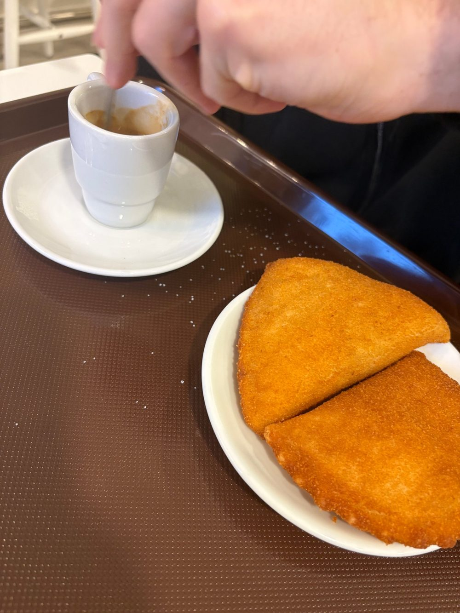
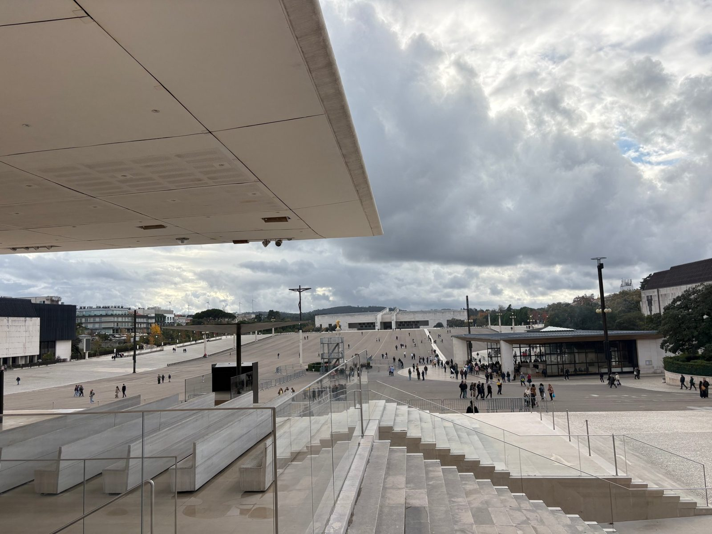
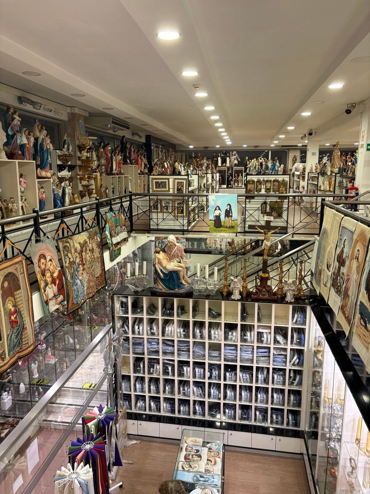
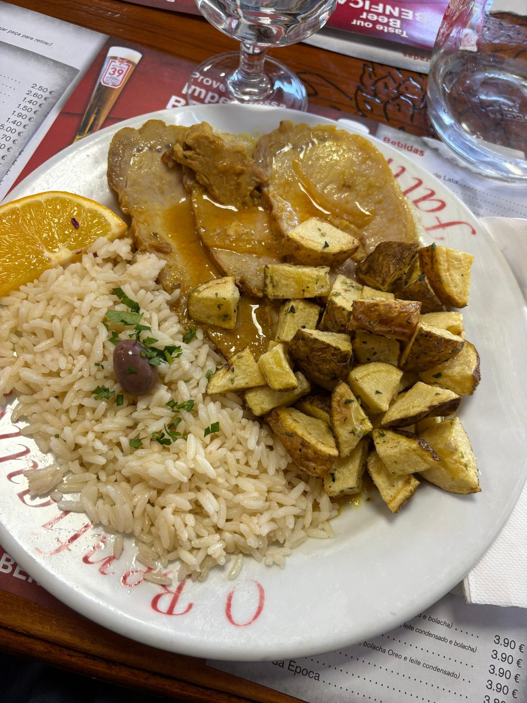
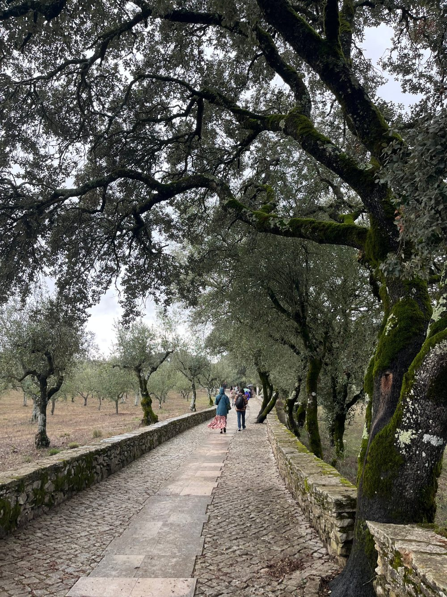

- Bus from Lisbon€8 each way
- Travel timeAbout 1.5 hours
- Espresso€1
- MealsUnder €12
Fátima is one of the most important Catholic pilgrimage sites in the world, and it's an easy day trip from Lisbon. The bus is €8 each way, breakfast is cheaper than in Lisbon, and every meal we ate cost under €12. It was one of the most memorable days of our weekend. (For the rest of the trip, see my Lisbon on a Budget post.)
1. Getting there: an early bus €8 each way
We were up around 5 AM to catch a bus from one of Lisbon's main bus stations. The ride took about an hour and a half on a comfortable, charter-style bus, and cost €8 each way. That was the price for our morning departure, and other times can cost more, so check the schedule and fares before you go.
2. Breakfast at Viva Maria Café €1 espresso
When we arrived in Fátima, we got breakfast at Viva Maria Café and Restaurant, inside the bus station. Espresso was €1 and pastries were €1 to €2, which is cheaper than what we paid in Lisbon.

3. The Sanctuary of Fátima Free
From the bus station we walked to the Sanctuary of Fátima, which has a huge open square for gatherings and Mass. Visiting is free, and you can spend as long as you like.

One of the most moving parts of the day for us was praying the rosary on our knees along the path to the spot where the apparition is said to have appeared. We prayed the sorrowful mysteries. Many pilgrims do this, but it's not easy, and your knees can get sore or even bleed on the stone. If you plan to do it, bring knee pads.
Inside, the Basilica of Our Lady of the Rosary holds the tombs of the three children who saw the apparitions. It's a quiet, powerful place to stop.
4. Shopping for rosaries and souvenirs
There are lots of shops around the sanctuary selling rosaries, statues, and other religious items. I'd stick with the established brick-and-mortar shops over the tiny stalls, since you get a better sense of quality and fair pricing. We liked Galerias do Rosário, which has two floors: one for priests and one for laypeople. Prices were reasonable, and it's a good place to pick up gifts.

5. Lunch at O Benfiquista Under €12
For lunch we went to O Benfiquista, a local restaurant where every meal we saw was under €12. The menu included pork chops, fried fish, stuffed calamari, pasta, salad, and chicken, with rice and fries on the side.

Tip: The appetizers that arrive at the table are not free. If you touch them, you'll be charged, so send them back if you don't want them.
6. Walking to the children's homes

After lunch we took a walk of about 45 minutes through the countryside to the children's homes in the village of Aljustrel, which have been preserved. It's a peaceful walk, and there's a bathroom along the way. We spent the evening back in the town centre, shopping a little more and having dinner at a local restaurant.
7. Heading back to Lisbon
The bus back to Lisbon took another hour and a half, and then we had a 30-minute bus ride to our Airbnb. It made for a long day, but a good one.
What we spent
Final Thoughts
Fátima is worth the early alarm. Whether you're religious or just curious, the sanctuary is free to visit, the food is cheap, and the whole day cost us far less than a day in most big cities. Just bring comfortable shoes, knee pads if you plan to pray on your knees, and an appetite.
Have you visited Fátima? Let me know in the comments, and don't forget to read about the rest of our weekend in Lisbon on a Budget.